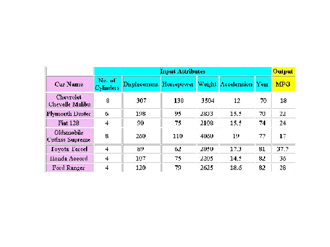
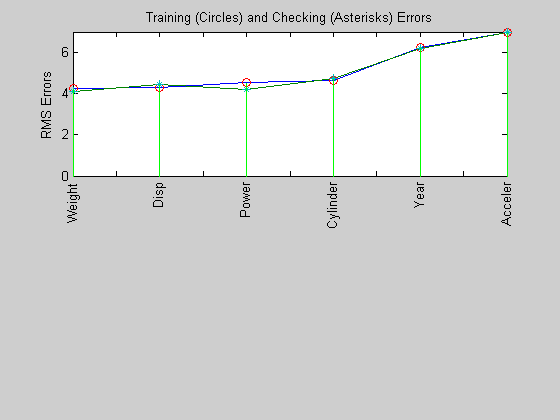
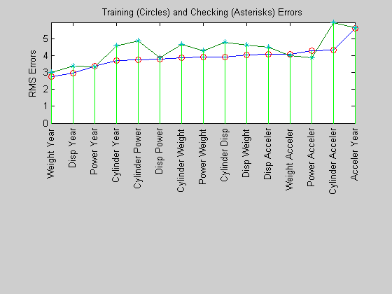
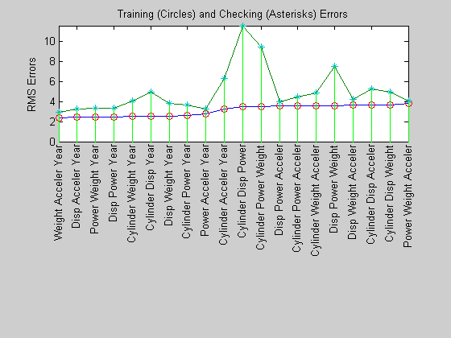
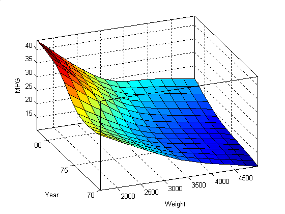
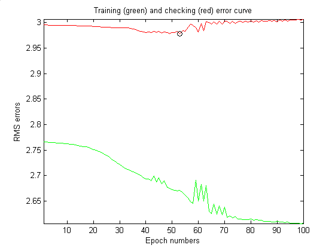
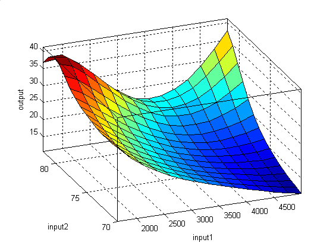
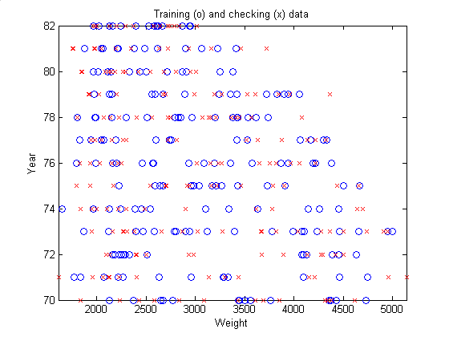

Car mileage prediction with ANFIS
This slide show addresses the use of ANFIS function in the Fuzzy Logic Toolbox for predicting the MPG (miles per gallon) of a given automobile.
Copyright 1994-2002 The MathWorks, Inc. $Revision: 1.9 $
Automobile MPG (miles per gallon) prediction is a typical nonlinear regression problem, in which several attributes of an automobile's profile information are used to predict another continuous attribute, that is, the fuel consumption in MPG. The training data is available from the UCI (Univ. of California at Irvine) Machine Learning Repository (http://www.ics.uci.edu/~mlearn/MLRepository.html). It contains data collected from automobiles of various manufactures and models, as shown in the next slide.
The table shown above is several tuples from the MPG data set. The six input attributes are no. of cylinders, displacement, horsepower, weight, acceleration, and model year; the output variable to be predicted is the fuel consumption in MPG. (The automobile's manufacturers and models in the first column of the table are not used for prediction. The data set is obtained from the original data file 'auto-gas.dat'. Then we partition the data set into a training set (odd-indexed tuples) and a checking set (even-indexed tuples), and use the function 'exhsrch' to find the input attributes that have better prediction power for ANFIS modeling.
a=imread('gasdata.jpg', 'jpg'); image(a); colormap(gray); axis image; axis off [data, input_name] = loadgas; trn_data = data(1:2:end, :); chk_data = data(2:2:end, :);
To select the best input attribute, 'exhsrch' constructs six ANFIS, each with a single input attribute. Here the result after executing exhsrch(1, trn_data, chk_data, input_name). Obviously, 'Weight' is the most influential input attribute and 'Disp' is the second one, etc. The training and checking errors are comparable in size, which implies that there is no overfitting and we can select more input variables. Intuitively, we can simply select 'Weight' and 'Disp' directly. However, this will not necessarily lead to a two-ANFIS model with the minimal training error. To verify this, we can issue the command exhsrch(2, trn_data, chk_data, input_name) to select the best two inputs from all possible combinations.
exhsrch(1, trn_data, chk_data, input_name); win1 = gcf;
Train 6 ANFIS models, each with 1 inputs selected from 6 candidates... ANFIS model 1: Cylinder --> trn=4.6400, chk=4.7255 ANFIS model 2: Disp --> trn=4.3106, chk=4.4316 ANFIS model 3: Power --> trn=4.5399, chk=4.1713 ANFIS model 4: Weight --> trn=4.2577, chk=4.0863 ANFIS model 5: Acceler --> trn=6.9789, chk=6.9317 ANFIS model 6: Year --> trn=6.2255, chk=6.1693
Demonstrate the result of selecting two inputs. 'Weight' and 'Year' are selected as the best two input variables, which is quite reasonable. The training and checking errors are getting distinguished, indicating the outset of overfitting. As a comparison, let us use exhsrch to select three inputs
input_index = exhsrch(2, trn_data, chk_data, input_name); new_trn_data = trn_data(:, [input_index, size(trn_data,2)]); new_chk_data = chk_data(:, [input_index, size(chk_data,2)]); win2 = gcf;
Train 15 ANFIS models, each with 2 inputs selected from 6 candidates... ANFIS model 1: Cylinder Disp --> trn=3.9320, chk=4.7920 ANFIS model 2: Cylinder Power --> trn=3.7364, chk=4.8683 ANFIS model 3: Cylinder Weight --> trn=3.8741, chk=4.6763 ANFIS model 4: Cylinder Acceler --> trn=4.3287, chk=5.9625 ANFIS model 5: Cylinder Year --> trn=3.7129, chk=4.5946 ANFIS model 6: Disp Power --> trn=3.8087, chk=3.8594 ANFIS model 7: Disp Weight --> trn=4.0271, chk=4.6350 ANFIS model 8: Disp Acceler --> trn=4.0782, chk=4.4890 ANFIS model 9: Disp Year --> trn=2.9565, chk=3.3905 ANFIS model 10: Power Weight --> trn=3.9310, chk=4.2976 ANFIS model 11: Power Acceler --> trn=4.2740, chk=3.8738 ANFIS model 12: Power Year --> trn=3.3796, chk=3.3505 ANFIS model 13: Weight Acceler --> trn=4.0875, chk=4.0095 ANFIS model 14: Weight Year --> trn=2.7657, chk=2.9953 ANFIS model 15: Acceler Year --> trn=5.6242, chk=5.6481
The popped figure demonstrates the result of selecting three inputs, in which 'Weight', 'Year', and 'Acceler' are selected as the best three input variables. However, the minimal training (and checking) error do not reduce significantly from that of the best 2-input model, which indicates that the newly added attribute 'Acceler' does not improve the prediction too much. For better generalization, we always prefer a model with a simple structure. Therefore we will stick to the two-input ANFIS for further exploration
exhsrch(3, trn_data, chk_data, input_name); win3 = gcf;
Train 20 ANFIS models, each with 3 inputs selected from 6 candidates... ANFIS model 1: Cylinder Disp Power --> trn=3.4446, chk=11.5329 ANFIS model 2: Cylinder Disp Weight --> trn=3.6686, chk=4.8922 ANFIS model 3: Cylinder Disp Acceler --> trn=3.6610, chk=5.2384 ANFIS model 4: Cylinder Disp Year --> trn=2.5463, chk=4.9001 ANFIS model 5: Cylinder Power Weight --> trn=3.4797, chk=9.3761 ANFIS model 6: Cylinder Power Acceler --> trn=3.5432, chk=4.4804 ANFIS model 7: Cylinder Power Year --> trn=2.6300, chk=3.6300 ANFIS model 8: Cylinder Weight Acceler --> trn=3.5708, chk=4.8378 ANFIS model 9: Cylinder Weight Year --> trn=2.4951, chk=4.0435 ANFIS model 10: Cylinder Acceler Year --> trn=3.2698, chk=6.2616 ANFIS model 11: Disp Power Weight --> trn=3.5879, chk=7.4948 ANFIS model 12: Disp Power Acceler --> trn=3.5395, chk=3.9953 ANFIS model 13: Disp Power Year --> trn=2.4607, chk=3.3563 ANFIS model 14: Disp Weight Acceler --> trn=3.6075, chk=4.2318 ANFIS model 15: Disp Weight Year --> trn=2.5617, chk=3.7865 ANFIS model 16: Disp Acceler Year --> trn=2.4149, chk=3.2480 ANFIS model 17: Power Weight Acceler --> trn=3.7884, chk=4.0480 ANFIS model 18: Power Weight Year --> trn=2.4371, chk=3.2852 ANFIS model 19: Power Acceler Year --> trn=2.7276, chk=3.2580 ANFIS model 20: Weight Acceler Year --> trn=2.3603, chk=2.9152
The input-output surface of the best two-input ANFIS model for MPG prediction is shown above. It is a nonlinear and monotonic surface, in which the predicted MPG increases with the increase in 'Weight' and decrease in 'Year'. The training RMSE (root mean squared error) is 2.766; the checking RMSE is 2.995. In comparison, a simple linear regression using all input candidates results in a training RMSE of 3.452, and a checking RMSE of 3.444.
if ishandle(win1), delete(win1); end if ishandle(win2), delete(win2); end if ishandle(win3), delete(win3); end in_fis=genfis1(new_trn_data); mf_n = 2; mf_type = 'gbellmf'; epoch_n = 1; ss = 0.01; ss_dec_rate = 0.5; ss_inc_rate = 1.5; in_fismat = genfis1(new_trn_data, mf_n, mf_type); [trn_out_fismat trn_error step_size chk_out_fismat chk_error] = anfis(new_trn_data, in_fismat, [epoch_n nan ss ss_dec_rate ss_inc_rate], nan, new_chk_data, 1); for i=1:length(input_index), chk_out_fismat = setfis(chk_out_fismat, 'input', i, 'name', deblank(input_name(input_index(i), :))); end chk_out_fismat = setfis(chk_out_fismat, 'output', 1, 'name', deblank(input_name(size(input_name, 1), :))); gensurf(chk_out_fismat); colormap('default'); set(gca, 'box', 'on'); view(-22, 36); fprintf('\nLinear regression with parameters:\n'); param= size(trn_data,2) A_trn = [trn_data(:, 1:size(data,2)-1) ones(size(trn_data,1), 1)]; B_trn = trn_data(:, size(data,2)); coef = A_trn\B_trn; trn_error = norm(A_trn*coef-B_trn)/sqrt(size(trn_data,1)); A_chk = [chk_data(:, 1:size(data,2)-1) ones(size(chk_data,1), 1)]; B_chk = chk_data(:, size(data,2)); chk_error = norm(A_chk*coef-B_chk)/sqrt(size(chk_data,1)); fprintf('\nRMSE for training data: '); RMSE=trn_error fprintf('\nRMSE for checking data: '); RMSE = chk_error
ANFIS info:
Number of nodes: 21
Number of linear parameters: 12
Number of nonlinear parameters: 12
Total number of parameters: 24
Number of training data pairs: 196
Number of checking data pairs: 196
Number of fuzzy rules: 4
Start training ANFIS ...
1 2.7657 2.99534
Designated epoch number reached --> ANFIS training completed at epoch 1.
Linear regression with parameters:
param =
7
RMSE for training data:
RMSE =
3.4527
RMSE for checking data:
RMSE =
3.4444
The function exhsrch only trains each ANFIS for a single epoch in order to be able to find the right inputs shortly. Now that the inputs are fixed, we can spend more time on ANFIS training. The above plot is the error curves for 100 epochs of ANFIS training. The green curve is the training errors; the red one is the checking errors. The minimal checking error occurs at about epoch 45, which is indicated by a circle. Notice that the checking error curve is going up after 50 epochs, indicating that further training overfits the data and produce worse generalization
watchon; epoch_n = 100; [trn_out_fismat trn_error step_size chk_out_fismat chk_error] = anfis(new_trn_data, in_fismat, [epoch_n nan ss ss_dec_rate ss_inc_rate], nan, new_chk_data, 1); [a, b] = min(chk_error); plot(1:epoch_n, trn_error, 'g-', 1:epoch_n, chk_error, 'r-', b, a, 'ko'); axis([-inf inf -inf inf]); title('Training (green) and checking (red) error curve'); xlabel('Epoch numbers'); ylabel('RMS errors'); watchoff;
ANFIS info: Number of nodes: 21 Number of linear parameters: 12 Number of nonlinear parameters: 12 Total number of parameters: 24 Number of training data pairs: 196 Number of checking data pairs: 196 Number of fuzzy rules: 4 Start training ANFIS ... 1 2.7657 2.99534 2 2.7654 2.9953 3 2.7651 2.99523 4 2.76479 2.99518 5 2.76449 2.99511 Step size increases to 0.015000 after epoch 5. 6 2.76418 2.99503 7 2.76372 2.99493 8 2.76325 2.9949 9 2.76278 2.99477 Step size increases to 0.022500 after epoch 9. 10 2.7623 2.99469 11 2.76159 2.99447 12 2.76086 2.99438 13 2.76013 2.99426 Step size increases to 0.033750 after epoch 13. 14 2.75939 2.99405 15 2.75827 2.99386 16 2.75714 2.99358 17 2.75599 2.99339 Step size increases to 0.050625 after epoch 17. 18 2.75483 2.99326 19 2.75306 2.99298 20 2.75126 2.99261 21 2.74944 2.99233 Step size increases to 0.075938 after epoch 21. 22 2.7476 2.99207 23 2.7448 2.99169 24 2.74199 2.99135 25 2.73918 2.99102 Step size increases to 0.113906 after epoch 25. 26 2.73639 2.99082 27 2.73231 2.99054 28 2.72842 2.9902 29 2.72482 2.99007 Step size increases to 0.170859 after epoch 29. 30 2.72159 2.9899 31 2.71752 2.99 32 2.71441 2.99015 33 2.71202 2.98944 Step size increases to 0.256289 after epoch 33. 34 2.71005 2.98859 35 2.70749 2.9876 36 2.70515 2.98597 37 2.70277 2.98462 Step size increases to 0.384434 after epoch 37. 38 2.7001 2.98264 39 2.69559 2.98146 40 2.69272 2.98034 41 2.69265 2.98195 Step size increases to 0.576650 after epoch 41. 42 2.68943 2.9807 43 2.69947 2.98322 44 2.68677 2.98027 45 2.69536 2.98285 46 2.68347 2.97939 Step size decreases to 0.288325 after epoch 46. 47 2.69 2.98215 48 2.67722 2.98046 49 2.67455 2.9781 50 2.67212 2.98094 51 2.67049 2.9809 Step size increases to 0.432488 after epoch 51. 52 2.6699 2.98267 53 2.67101 2.97783 54 2.66589 2.98443 55 2.66175 2.98259 56 2.65602 2.99089 57 2.64908 2.9976 Step size increases to 0.648732 after epoch 57. 58 2.64504 2.99444 59 2.69116 2.98964 60 2.65037 2.98146 61 2.68259 2.99837 62 2.64958 2.98423 Step size decreases to 0.324366 after epoch 62. 63 2.68029 3.00159 64 2.62932 3.00066 65 2.62503 2.9973 66 2.6443 3.00182 67 2.62391 2.99736 68 2.64091 3.00233 69 2.62307 2.99737 Step size decreases to 0.162183 after epoch 69. 70 2.63843 3.00288 71 2.61774 3.00274 72 2.62032 2.99779 73 2.6167 3.00287 Step size decreases to 0.081091 after epoch 73. 74 2.61891 2.99806 75 2.61479 3.00121 76 2.61458 3.00276 77 2.61399 3.00091 78 2.61359 3.00289 Step size increases to 0.121637 after epoch 78. 79 2.61321 3.00099 80 2.61459 3.00368 81 2.6126 3.00101 82 2.61349 3.00398 83 2.61202 3.0011 Step size decreases to 0.060819 after epoch 83. 84 2.61258 3.00425 85 2.61029 3.00315 86 2.60979 3.00258 87 2.60961 3.00415 88 2.60923 3.00271 Step size increases to 0.091228 after epoch 88. 89 2.60894 3.00435 90 2.6096 3.002 91 2.60841 3.00494 92 2.60888 3.00249 93 2.6079 3.00538 Step size decreases to 0.045614 after epoch 93. 94 2.60823 3.00291 95 2.60688 3.00465 96 2.60653 3.00562 97 2.60634 3.00468 98 2.60603 3.00603 Step size increases to 0.068421 after epoch 98. 99 2.60583 3.00508 100 2.606 3.00699 Designated epoch number reached --> ANFIS training completed at epoch 100.
The snapshot of the two-input ANFIS at the minimal checking error has the above input-output surface. Both the training and checking errors are lower than before, but we can see some spurious effects at the far-end corner of the surface. The elevated corner says that the heavier an automobile is, the more gas-efficient it will be. This is totally counter-intuitive, and it is a direct result from lack of data.
gensurf(chk_out_fismat); set(gca, 'box', 'on'); view(-22, 36);
This plot shows the data distribution. The lack of training data at the upper right corner causes the spurious ANFIS surface mentioned earlier. Therefore the prediction by ANFIS should always be interpreted with the data distribution in mind.
plot(new_trn_data(:,1), new_trn_data(:, 2), 'bo', new_chk_data(:,1), new_chk_data(:, 2), 'rx'); axis([-inf inf -inf inf]); xlabel(deblank(input_name(input_index(1), :))); ylabel(deblank(input_name(input_index(2), :))); title('Training (o) and checking (x) data');